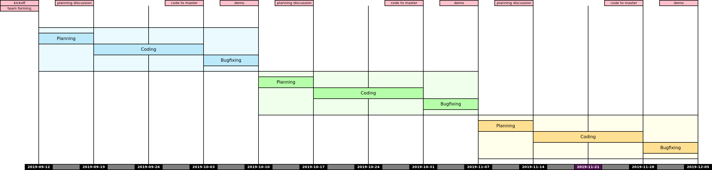
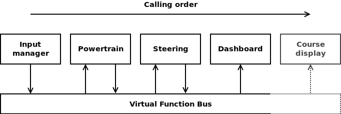

Szoftverfejlesztés multinacionális vállalatoknál
A tárgy keretében a hallgatók lehetőséget kapnak megtapasztalni egy multinacionális környezetben történő szoftverfejlesztés mikéntjét és kihívásait. A félév során a hallgatók egy, vezetéstámogató rendszerek működésének demonstrációjára szolgáló játék fejlesztésén keresztül megismerhetik a Scrum Agile metodológiát, kipróbálhatják a Test Driven Developmentet, elsajátíthatják a Clean Code írásának alapelveit, tapasztalatot szerezhetnek a jó Code Review végzésében, továbbá elméleti ismeretet szereznek a Software Craftsmanshipről, Agile-ról általában, a Continuous Integration-ről.
A tárgy kettős felépítésű - minden alkalommal elméleti előadáson mutat be egy új ismeretanyagot, amit aztán a hallgatók a gyakorlatba ültethetnek a saját csapatukon belül. A félév során kis létszámú (4-7 fős) csapatokra bontva három sprintet kell teljesíteni, minden sprintben működő szoftvert szállítani, amit a hallgatók terveznek, implementálnak (Java nyelven, Git és IntelliJ IDEA segítségével), integrálnak és verifikálnak majd csapatonként mutatják be saját kontribúciójukat. Ez teljes féléves órán kívüli elköteleződést és felelősség vállalást kíván a csapat sikere iránt - az értékelés jelentős részét a gyakorlati munka adja.
A tantárgy célja, hogy a hallgatók olyan tapasztalatot szerezzenek, amely egy tipikus multinacionális környezetben előfordul: párhuzamos és komponens alapú szoftverfejlesztés, megrendelő fókusz, határidős fejlesztések, proaktivitás, kommunikációs és (ön)szervező készség, függőségek és blokkoló tényezők feloldása, megoldása.
Szoftver leírása
The program simulates the behavior of a passenger vehicle on the public road, equipped with driver assistance functions.
Equipped driver assistance functions are Parking Assist, Adaptive Cruise Control with Automated Emergency Braking and Lane Keeping Assistance with Traffic Sign Recognition, based on Ultra Sonic, Radar and Video sensors, respectively.
The inputs are categorized into two separate groups: user input, and configuration.
User input consists of the following elements:
- Throttle button - gradually increasing while pressed, on a 1s duration from 0->100%, if not pressed, returns to idle
- Brake button - gradually increasing while pressed, on a 0.5s duration from 0->100%, if not pressed, returns to idle
- Gear Shift - Automated, P/R/N/D available for choosing with a rotary button
- Steering Buttons - left, right, gradually increasing while pressed on a 1s duration from 0->100%, in idle returns to straight
- Driver Assistance Function Main Switches - On/Off, flip switch, changes state on press
- ACC: Set/Resume/Plus/Minus/Time Gap switches, activating the function, changing the chosen reference speed, changing the chosen distance to the target vehicle, respectively
- PA: Indicators to activate parking spot search, confirmation button to trigger automated parking maneuver
Configuration input consist of the following elements:
- Description of world in an XML file, in a predefined language
- "Tiles" - building blocks of the simulated world, such as roads, trees, people, vehicles, buildings, etc.
- Position and behavior of non-player vehicles and characters
- Position of the player vehicle
The system processes the input configuration, builds a world from the provided elements after processing the content of the XML file, creating a coordinate system and defining the distances, sizes and positions of the objects in that, places the non-player vehicles and the player in the world, and cyclically updates their position, interrupting or replacing the driver input with the calculated actuation requests from the Driver Assistance systems, whenever applicable. The output consists of two parts: first, the world with all its objects, displayed through a camera view, which centers on the player, and follows its movements, second the feedback about the current state of the vehicle, including the following data:
- Current speed
- Current gas, brake pedal position
- Current steering wheel angle
- Current gear
- Indicator status
- ACC: Set Speed, Time Gap level, Object detected (boolean), main status(on/off/controlling)
- AEB: on/off status, visual warning signal (Yellow: probable collision, Red: automated braking active)
- Parking assist: available(yellow),searching for place(blinking yellow), spot found(green), parking (blinking green), off (no signal)
- LKA/TSR: On/Off, detected speed limit, detected warning sign, controlling steering(green), lane marking not available(yellow)
The driver assistance systems apply actuation requests to the steering, drivetrain(engine, transmission) or both, of the ego vehicle. Said subsystems decide if the actuation request of the player or the driver assistance system shall be executed. The actuation request is calculated from the information detectable by the sensor the DA systems depend on. The Video, Radar and Ultrasonic sensors have specified Fields of View, and view distance, detect a different subset of objects. From the provided object list - simulating the real world hardware detection of radar wave reflection, image processing, ultrasonic reflection - the "software" components evaluate the control relevant subset, and if the conditions are fulfilled (i.e. function activated and driving in lane, object in ego lane in front of vehicle, relative speed negative, distance reducing as time passes by) the function requests actuation (in the above example, requests speed reduction from the drivetrain).
The system decides between the concurrent drivetrain requests based on comfort and safety aspects. The system shall handle and detect collisions between the objects of the world. The simulation is approximating the real world physics, to provide a satisfying driving experience for the player, and an appropriate demonstration of the work of the driver assistance systems. On demand, the field of view of the sensors, and the detected control objects may be marked on the display for debug or demonstration.
Mottó
A designer knows he has achieved perfection not when there is nothing left to add, but when there is nothing left to take away.
Ütemezés
Az órák csütörtökönként a BA.F.09-ban vannak, neptun szerint 08:00-10:35 között előadás és 10:45-11:30 között gyakorlat. (Ezek aránya valamint közte a szünet az aktuális előadásanyag és az igények szerint módosulhat). A „gyakorlat” nem labor, hanem sokkal inkább konzultáció!
| hét | dátum | előadás | gyakorlat |
|---|---|---|---|
| 1. | 02. 13. | Bevezető, áttekintés; aSpice alapok, első feladat kiadás | csapatsorsolás, Sprint Planning, Task Definition Workshop, Team commitment, Scheduling |
| 2. | 02. 20. | Agile/Scrum | git, GitHub, IDEA ismertetés |
| 3. | 02. 27!. | Napi munka, verziókezelők | Branch review, status review, standup (did, will, blocking) |
| 4. | 03. 05. | Unit Testing | TDD kata |
| 5. | 03. 12. | első demo/retrospektív, második feladat kiadás | Sprint planning, Task Definition Workshop, Team commitment, Scheduling |
| 6. | 03. 19. | Legacy Code, SOLID | Refactoring gyakorlat egy előre előkészített példán |
| 7. | 03. 26.! | Review | Random code review egy tetszőleges elfogadott pull requestből |
| 8. | 04. 02. | második demo/retrospektív, harmadik feladat kiadás | Sprint planning, Task Definition Workshop, Team commitment, Scheduling |
| 9. | 04. 09. | Rektori/dékáni szünet | |
| 10. | 04. 16!. | Continous Integration | Set up a CI script running all implemented unit tests |
| 11. | 04. 23. | Software Architecture | |
| 12. | 04. 30. | harmadik demo/retrospektív, Összefoglalás, konzultáció, tárgy feedback | Retro + Pair programming, Coding Dojo |
| 13. | 05. 07. | Zárthelyi dolgozat 08:00-tól 09:30-ig (90 perc), 1.?? és 1.?? laborok | |
| 14. | 05. 14. |
Gantt diagram

Házi feladat - 1. hét
- GitHub fiók létrehozása
- ha még nincs
- 11 JDK telepítése, mivel a szoftvert Java nyelven kell elkészíteni
- ha nincs fönt
- Fejlesztőkörnyezet telepítése és beállítása
- IntelliJ IDEA az ajánlott és támogatott eszköz
- Git és GitHub oktatóanyagok elolvasása
- ha vannak hiányosságok
- az órán nincs idő szájbarágósan git használatot oktatni, erre vannak interaktív oktatófelületek
- ez mindenkinek egyéni felelőssége, ám ha konkrét kérdések merülnek fel, akkor ezekre természetesen kitérünk
- Git repó klónozása
- Kód futtatása a futtató- és a fejlesztőkörnyezet beállításainak tesztelése céljából
- A jegyzet és az abban taglalt segédanyagok megismerése
- Az elkészítendő szoftver átgondolása (lásd readme), statikus és dinamikus modell elkészítése komponens szinten
- Ennek terjedelme (az órái példa alapján): egy absztrakciós szint a négyfelé bontás (kb. user story szint), és egy az ez alatti egyel, minden komponens még egy kibontása, kb. egyenrangú komponensek létrehozására - osztály szintre nem mennék le, még ha a végén ezekből akár osztály is lesz. Szóval kettő struktúra, kettő dinamikus viselkedést leíró diagram, egy magasabb és egy alacsonyabb absztrakciós szinten. Hogy konkrétan hány building block, azt mindenkinek "érzésre" kell megállapítania, ezért szubjektív az architektúra.
- Ez egy egyéni feladat, hiszen még nincsenek csapatok. Az elkészítéshez javasolt eszközök: MS Visio, https://www.draw.io/.
- Az elkészült diagramoknak a következő órán bemutatható állapotban kell lenniük.
Demók
A félév során a csapatok három alkalommal prezentálják az elvégzett munkát. A „demók” az elkészült szoftver megrendelőnek való bemutatását szimulálják. Nem a kódra vagyunk kíváncsiak, hanem működés közben szeretnénk látni, hogy a szoftver teljesíti feladatban foglalt követelményeket.
A bemutatás során, a master branchre befogadott kódot vesszük figyelembe, minden egyéb „nem készült el határidőre”, azaz értékelhetetlen.
Zárthelyi
Ismert, Moodle-ös teszt, 50 kérdéssel, erre 90 perc áll majd a rendelkezésre. Minden kérdéshez 4 válaszlehetőség, amelyek közül pontosan egy a helyes. (Vannak „az alábbiak közül melyik NEM helyes” felépítésű kérdések is.) A rendelkezésre álló idő alatt kérdéseket tetszőleges alkalommal felül lehet vizsgálni, módosítani a teszt „lezárása” után azonnal kiértékelésre is kerül.
Online anyagok
Alább néhány, az interneten az ismert kulcsszavak alapján könnyen (legalábbis közepesen nehezen) elérhető link, amiket felhasználtam pl. az előadásokra való felkészülésre, így alkalmasnak tartom őket arra, hogy segítsenek benneteket a ZH-ra készülésben. Természetesen angol nyelven. ;)
- Clean code
- Verziókövetés
- Code review
- Scrum
- Kanban
- The Rules of Extreme Programming
- TDD Laws
- TDD wikiről
- Unit Testing with Junit
- Test Doubles
- az úriember blogján egyébként rengeteg hasonló hosszúságú, elég releváns bejegyzés van
- The Transformation Priority Premise
- Advanced TDD: The Transformation Priority Premise
- videó
- Refactoring
- S.O.L.I.D.
- Core Design Principles for Software Developers by Venkat Subramaniam
- Az egész előadás ajánlott, de a Single Responsibility rész különösen, ez olyan 25 perc
- Core Design Principles for Software Developers by Venkat Subramaniam
- Legacy Code
- Code smells
- Continuous Integration
- Integration testing
- teszt stratégiák is benne vannak
- innen a többi tesztes fejezet is jó!
Javasolt (fel)készülési módszer
Mivel a diákat nem adjuk ki, célszerű jegyzetelni: címszavakat, fogalmakat leírni, gondolatmenetet rögzíteni (bár ehhez is kaptok kész anyagot az alábbi mindmap tekintetében). Nem a diát kell lekörmölni (annak ellenére sem, hogy azokat nem kaphatjátok meg), annak nincs értelme! Óra után (az óra hetében), ezekre rákeresni (pl. Google), valamint elolvasni az itteni anyagokat. A hivatkozott linkek mögötti tartalom olyan anyagmennyiséget jelent, amelyet a ZH előtti estén nem lehet feldolgozni.
Mindmap
A témakörök „mindmap” formájú összefoglalása letölthető itt, megnyitáshoz a Freemind nevű javás eszköz szükséges. Vagy közvetlenül innen megnyitható a HTML-re fordított változata.
Címszavak
Címszavak (különösebb sorrend nélkül) amelyek az elméleti anyagot több-kevésbé lefedik. Ha valakinek ezeket a fogalmakat nem tudja kifejteni (nem tiszta mit jelent), akkor célszerű megkérdezni a Googlet vagy a Wikit. ;)
agile, agile manifesto, software craftmanship, SCRUM, user story, backlog (product backlog vs. sprint backlog; ki szerkeszti?), task (hossza, elemei), sprint (hossza), sprint review, sprint planning, burndown chart, scrum of scrums, business value, story point, standup (hossza, mikor van, ki vesz rajta részt, 3 kérdés), blocking issue, retro(spective), backlog refinement (aka backlog grooming), demo, daily cycle, clean code, traceability (eszkaláció), version control (elosztott vs. centralizált), refactoring, review (informal, walkthrough, technical, inspection), pair programming, scrum team tagjai: scrum master, product owner, development team, cross functional team, self-organizing team, stakeholder, kanban, scrumban, waterfall, v-model, scrum of scrums (ambassador), TDD, (software) unit, unit testing (arrange, act, assert, annihilate), test suite, test case, quality assurance, coding kata, code golf, legacy code, code smell, rotting code, dependency reduction, seams, continuous integration, automated testing, continuous deployment, minimized context switch, DevOps, coding dojo, SOLID priciples, clean code, definition of done, milestone, deadline, mocking (dummy, stub, spy, mock, fake), requirement, requirement engineering, centralized version control, distributed version control, traceability, finding, bug fixing, optimizing, feature envy, KISS, code complexity, cyclomatic complexity, regression test, deployment strategies/shadow deploy, teszt stratégiák (top-down, bottom-up, sandwich, big-bang, risky-hardest), nightly build, hardware in the loop (HIL), software in the loop (SIL), SMART objectives, technical debt, effort estimation
Ajánlott irodalom
- The Software Craftsman: Professionalism, Pragmatism, Pride – Robert C. Martin
- The Clean Coder: A Code of Conduct for Professional Programmers – Robert C. Martin
- Clean Code: A Handbook of Agile Software Craftsmanship – Robert C. Martin
- Working Effectively with Legacy Code - Michael Feathers
- TDD by Example – Kent Beck
- XP Explained – Kent Beck
Irónia


Interaktív online oktató anyagok
- Webes interaktív oktatóanyag
- GitHub fiókkal -többek közt- a git kurzus ingyenesen végigvihető
- az első 6 modul mindenképpen ajánlott
- Learn Git Branching
- ez kifejezetten a branchelésre megy rá, szóval nem véletlenül a második!
Online anyagok
- Version Control Tutorial
- kezdőknek, az alapoktól
- git - the simple guide
- inkább újrakezdőknek, ismétlés szintű
- Altassian Git tutoriálja
- Git Notes for Professionals book
- haladókank, nem tanítja a git használatát, de probléma: megoldás alapon összefoglalja a használatának majd minden aspektusát (a Stackoverflow válaszok alapján)
- Git könyv
- mindent tartalmaz a gitről, gyakorlatilag a fejlesztők által írt dokumentáció
- "git branching in a nutshell" fejezete viszont minimum ajánlott
- Fork szinkronizálása
GitHub
puskák PDF formátumban
Commit üzenetekről

- How to Write a Git Commit Message
- ez egy hosszabb, példákkal illusztrált írás (angol nyelven) a jó commit üzenetekről,
- amely hét szabályban foglalja össze, hogy mire kell figyelni
- ugyanez érvényes a Pull Requestek üzenetére is, sőt még akkor sem tilos összefoglalni tömören a PR-ben összegzett funkciók lényegét, ha a commit-ok egyébként teljes mértékben betartják a fenti szabályokat!
- Egy commit üzenet utólagos megváltoztatása nem egyszerű (különösen ha pusholva lett, lokálisan még nem is olyan vészes), így eleve írjuk meg korrekten.
- Ha többen dolgoztok egy módosításon akkor a commit üzenet láblécében tüntessétek föl a társszerzőket is.
Társszerzők
A munkafolyamat alapvetően egyéni munkára van kitalálva, de legkevésbé sem tilos a pair programming sem. Volt, hogy Skype-os képernyő-megosztásos módszerrel dolgoztak távolról párban... Ilyenkor mindig felvetődik a kérdés, hogy csak az egyik kolléga nevében történhet a commit de mi van a másikkal... A GitHub bevezetett egy új funkciót ennek orvoslására. Részletek elérhetőek itt.
Ebben az esetben a commit üzenet törzse után 2 üres sorral elválasztva kell a társszerzőket feltüntetni. Pl.:
Commit message header
Commit message body preceded by an empty line and followed by
two empty lines and the trailer.
Co-authored-by: name <name@example.com>
Co-authored-by: another-name <another-name@example.com>"
Ahhoz, hogy a GitHub a társszerzőt össze is tudja rendelni a felhasználói fiókjával fontos, hogy az a name és különösen az az e-mail szerepeljen, amelyet egyébként git beállításként használ!
Ímélcím védelme
A GH minden felhasználónak biztosít egy "proxy ímélcímet", hogy titokban tarthassa a címét, ez xxxxxxx+username@users.noreply.github.com szerkezetű, ahogy xxxxxxx egy hétjegyű felhasználói azonosító. Bővebben itt. Ezt is lehet használni, nem csak társszerzőhöz hanem saját címnek is, csak legyen konzisztens!
További „iskolák”
- AngularJS Git Commit Message Conventions
- a commit üzenet fejlécét a
<type>(<scope>): <subject>szabály szerint követeli meg, ahol típus lehet build, ci, docs, feat, fix, perf, refactor, style és test
- a commit üzenet fejlécét a
- Egy másik a Conventional Commits
Mikor érdemes commit-olni?
- When to make a Git Commit
- a poszthoz tartozó kommenteket is érdemes átfutni...
Pull Request-ek
- A fentiek igazak a PR üzenetére is!
- A PR üzenete kötelezően tartalmazza a következőket:
- Masterbe küldés esetén melyik csapattól érkezik
- Mit javít, a vonatkozó issue-val pl.
#42 - Milyen új funkcionalitást ad a kódhoz, a vonatkozó issue-val pl.
#42 - Milyen viselkedést változtat/tör meg, a vonatkozó issue-val pl.
#42

Oktatóanyagok
A félév során a GitHubot használjuk a kód tárolására és a feladatok menedzselésére is. GitHub használatához segítség:
Áttekintés
Minden hallgató tagja lesz a SzFMV2019-Tavasz szervezetnek (Organization), és egy-egy csapatnak (Team1, ..., Team4). Minden csapat külön issue board-dal rendelkezik (Projects), ezen kell vezetni a feladatok (issue) megoldását (részletében lásd Munkafolyamat).
Issue-t nem csak feladatra lehet felvenni, akár kérdésre is, probléma megvitatására is. Ez esetben célszerű megjelölni a Question címkével. 2017 őszétől csapat (team) szintű fórummal is rendelkezik a GitHub. A szervezeten belül a csapatok hierarchikus struktúrában vannak. A gyökér az Everyone, az összes többi csapat ennek tagja. Az Everyone falára (discussions) írt üzeneteket mindenki megkapja. Ezen keresztül fogunk a félév során kurzus szintű közleményeket kiadni, de bárki használhatja kommunikációra. Ugyanilyen üzenőfallal rendelkezik az összes többi csapat is, amelyre szintén bárki írhat. Ha például a Team2-ből szeretné elérni valaki a Team3-at, akkor mindösszesen annyi a dolga, hogy ír a Team3 üzenőfalára. A Staff nevű team-en keresztül az oktatókat lehet elérni ugyanilyen módon.
A comment szekciókban is élnek az @ jeles említések, ez a mi esetünkben @ravaszla és @pintergreg, ugyanígy működik csapatra is pl. @szfmv2019-tavasz/teama1, illetve @szfmv2019-tavasz/staff a mi esetünkben. Csapat esetében a csapat valamennyi tagja kap értesítést az hivatkozásról.
A GitHub valamennyi elemén használhatóak formázási lehetőségek Markdown stílusban, kód kiemelésre is lehetőség van, amelyet több mint célszerű használni. Ehhez csak a nyelv nevét kell csak a nyitó ``` jelek után írni:
```python
def get_random_number():
return 4; # chosen by fair dice roll. guaranteed to be random.
```
Eredmény:
def get_random_number():
return 4; # chosen by fair dice roll. guaranteed to be random.
Pull requestek kezelése: review és ütközésfeloldás
Előfordulhat, hogy a git nem tudja feloldani a változtatásokat és emberi beavatkozást igényel a merge-elés. Például létrehoztad a feature branchet a csapat branch adott állapotáról, ám az időközben módosult és a módosítás ugyanazon fájl ugyanazon részét érintette. A GitHubon ez az alábbihoz hasonlóan néz ki:

Ezen belül is egyszerűbb esetekben a GH felajánlja a webes szerkesztőjét, de összetettebb esetekben ki kell checkolni az adott ágat és „kézzel” (editorral) feloldani helyzetet.
Fontos! A masterbe nem fogadunk el olyan PR-et, amelyben ütközés van, mivel jellemzően nem tudjuk eldönteni, hogy melyik változat fele meg „az utoljára megbeszélteknek”.
Webes szerkesztő
A képen az látható, hogy Hegedűs kolléga a master azon állapotában írta be a nevét, amikor a 64. sor volt az utolsó. Időközben egyéb PR-eket is elfogadtam így a git nem tudja, hogy a 68-73. sorokat kell megtartani vagy a 66.-at (ennek szintaktikáját látni a „kacsacsőrökkel”).

Jelen esetben persze mindkettő kell, így kézzel átrendezem, majd ezt megjelölöm feloldottnak:


További tippek a témában: https://stackoverflow.com/questions/161813/how-to-resolve-merge-conflicts-in-git
Ekkor a GH azt mutatja, hogy nincs ütközés, de review szükséges (ha nem is volt ütközés, akkor innen indul a történet).
Lokális szerkesztő
Ha a GH webes felületén nem engedi az ütközés feloldását, akkor lokálisan kell. Az IDEA pl. az alábbi három paneles megoldást kínálja. Csak rá kell kattintgatni arra, amelyiket meg akarjuk tartani (vagy kézzel összemásolni mint a fönti példa esetében).
Ha valaki parancssorból intézi, akkor a beállított editorral nyitja meg (vi, nano, stb.) és szintaktikailag ugyanazt a megoldást kapja mint a webes editor esetében.

Review

Erre az „add your review” szolgál. Fájlonként át lehet nézni minden módosítást, soronként kommentelni, illetve egy globális véleményt írni a PR-ről (+1, -1, -2). A comment opció semleges, nem elfogadás, de nem is elutasítás. A másik két opció elég egyértelmű. Ha változtatást kérsz, akkor addig amíg a PR forrásbranche nem módosul nem lehet újra próbálkozni a PR elfogadásával.

Ha minden rendben, akkor el lehet fogadni a PR-et:

Elfogadás után így néz ki:

Ezen a ponton a feature branch nem szükséges továbbá, törölhető. Persze egy ideig még visszaállítható:

Branching modell
Az „A successful Git branching model” című posztban lehet olvasni egy szélesebb körben kedvelt modellről. A félév során használt többé-kevésbé ehhez hasonló.

A master branch védett, nem lehet bele commitolni. Nem egy, hanem több (4) fejlesztői branch-ünk van (team1, ..., team4), ezek szintén védettek. Minden feladathoz létre kell hozni egy feature branch-et, azon lehet dolgozni. Ha a feladat elkészült, akkor a csapat branchbe lehet merge-eni. Ami mivel védett pull request-et (továbbiakban PR) küldeni. A PR lehetőséget biztosít ellenőrzésekre és review-zásra. Csak a lefordítható, teszteknek megfelelő, ütközés (conflict) mentes PR kerülhet elfogadásra!
Fontos: Ha egy PR nem fogadható el, akkor sem kell a PR-t lezárni, lehet tovább dolgozni a forrás branchen, az új commit-okkal automatikusan frissül a PR is addig míg a teszteknek meg nem felel és elfogadásra nem került.
Ha a PR el lett fogadva, a feature branch-re nincs már tovább szükség. Le lehet törölni és be kell zárni azt az issue-t is, amihez a branch kapcsolódott. Tehát ideálisan minden (nem user-story és kérdés) issue-hoz készül(t) egy branch.
Érdekes írások a témában
- A fork és a branch közötti különbségekről
- a simple git branching model
- Comparing Workflows
- Git branching and forking in the enterprise: why fork?
- Using the Fork-and-Branch Git Workflow
- Stackoverflow / Forking vs. Branching in GitHub
- A succesful Git branching model considered harmful
Programozási nyelv
A feladat megoldásához Java nyelvet, annak is a 11-es verzióját kell használni, Maven projekt menedzsment eszközzel. (A kiinduló projekt ezeket már teljesíti). Egyaránt használható az Oracle JDK 11 vagy az OpenJDK 11 is, operációs rendszer sincs megszabva. Az automatizált CI eszközök jogi okokból az OpenJDK-t használják, linuxon. Szóval már csak emiatt is „érdemes” platformfüggetlen kódot írni!
Az ajánlott és támogatott fejlesztői környezet az IntelliJ IDEA, ez tartalmaz mindent amire szükség lehet a félév során. A Community Edition ingyenes, egyetemi e-mail címmel ingyen igényelhető Pro verzió!
Nincs elvi akadálya a NetBeans, az Eclipse vagy tetszőleges editor használatának sem, de ezek beállítása az elvárásoknak megfelelően egyéni felelősség. NetBeanshez ajánlott plugin(-ek): Git toolbar
A fejlesztői környezetek rendelkeznek Git integrációval, de a parancssoron kívül grafikus kliensek is léteznek, többek között a GitHub saját asztali kliense.
Tesztlefedettség
Tesztlefedettség támogatás a fejlesztői eszközökben.
Kódformázás
IDEA beállításai alapértelmezetten elvileg megfelelnek az elvárásoknak, így egy fájl befejezése után (de értelem szerűen commit előtt) célszerű egy formázást megejteni: Code > Reformat Code (CTRL+ALT+L)
- A behúzás beállítása: File > Settings > Editor > Code Style > Java > Tabs and Indents: nem tab, de 4 karakternyi
- A sorhossz beállítása: File > Settings > Editor > Code Style > Default Options > Right magin (columns) 120 kell, hogy legyen eredetileg
- Emellett default beállításokban a vessző és kettőspont utáni szóközök, illetve az operátorokat körbevevő szóközök is szerepelnek. Továbbá a kapcsos zárójelek használata is az elvártnak megfelelően van beállítva.
Checkstyle plugin
Checkstyle plugin beállítása IntelliJ IDEA környezetbe. A plugin telepíthető a plugin managerből majd a következő beállításokra van szükség:
File > Settings > Other Settings > Checkstyle > Configuration File panelen Add és a projekt gyökérben megtalálható checkstyle.xml fájlt kell neki megadni (és elnevezni valamiként, az alábbi képen szfmv). Innentől a fejlesztői környezeten belül elérhető a kódminőség-ellenőrzés valós időben, warning-okkal jelzi a találatokat. Bővebben itt!


Logolás
Maven és a proxy
Ha valaki céges gépen dolgozik előírt proxy mellett, érdemes figyelni arra, hogy a maven-nek külön kell konfigurálni a proxy-t.
Függőségeket tartalmazó futtatható .jar állomány létrehozása
mvn clean compile assembly:single
Az eredmény a target/AutomatedCar-jar-with-dependencies.jar
Kódformázás

A kód tisztasága, olvashatósága nem csak szemantikai, de szintaktikai értelemben is fontos. Minden nyelvnek megvannak a maga „nyelvtani”, szintaktikai előírásai, amit a fordító be is tartat. Azonban ezen túl megvannak azok az (íratlan) szabályai is, amiket már nem a fordító feladata betartatni. (A Go fordítónál ez kezd egybemosódni, pl. nem fordul a kód ha van deklarált, de fel nem használt változód, a gofmt, Go format pedig kikényszeríti a kódformázási szabályokat.)
Ezek olyan kódformázási szabályok, amelyek több szinten lehetnek definiálva. Egyrészt (többé-kevésbé) egyezményesen egy-egy nyelv szintjén (pl. PEP8 Python esetében, gofmt), aztán lehetnek vállalati esetleg osztály és projekt szinten is. Például a Linux kernelkez tartozó előírások - többek között - 8 szóköznyi behúzást írnak elő és maximum 80 karakter széles sorokat. A gondolat emögött, hogy maximum három blokk mélységű szerkezet fogadható el, amikor is már a sor 30%-át teszi ki a behúzás. Ennél több behúzás esetén már nem sok hely marad a kódnak.
A Java nyelvhez is van(nak) kódformázási előírás(ok), amelyek egy része teljesen általános. Pl. a csomagnevek kisbetűsek, az osztály nevek mindig nagybetűvel kezdődnek (a fejlesztői környezetek ezt például általánosan számon kérik), a metódusnevek pedig kis betűvel kezdődnek továbbá a szóösszetételeknél nagybetűket használunk pl. metódusNév.
Átfogó ajánlást készített még 2000 környékén a Sun, ám ez mára meglehetősen túlhaladott, vagy ilyen a Google által összeállított Google Java Style Guide. Ez viszont helyenként túl specifikus (nagyvállalati környezetre optimalizált) a tárgy kereteihez, így nem egy az egyben ezt használjuk. A Checkstyle statikus kódanalizátor default értékei vagy a Jetbrains által az IntelliJ IDEA-ba beállított default szabályok is felfoghatók egy ilyen ajánlásnak.
kódformázási előírások
Örök kérdés, hogy szóközök vagy tabok jelöljék-e a behúzást. Ma már minden normális editor beállítható úgyis, hogy a tab billentyű szóközöket szúrjon be, amelyik erre (sem) képest azt meg nem használjuk. A kérdés, legalábbis ezen tárgy keretein belül azzal zárult, hogy mindenki szóközöket használ, tabok nem lehetnek a fájlban. Pont. Egy rövid (nem túl komoly) videó a témában: Silicon Valley - S03E06
- a behúzást 4 szóköz jelöli (nincs tab a fájlban)
- nem lehetnek üres blokkok
- a nyitó kapcsos zárójel a sor végén található
if (condition) {
...
}
- a záró kapcsos zárójel kulcsszavakkal azonos sorba helyezendő
try {
...
} catch (Exception ex) {
...
} finally {
...
}
- minden esetben ki kell tenni a blokkjelölő kapcsos zárójeleket
- osztályon belül meghatározott sorrendben szerepelnek az elemek
- Class (static) variables. First the public class variables, then protected, then package level (no access modifier), and then private.
- Instance variables. First the public class variables, then protected, then package level (no access modifier), and then private.
- Constructors
- Methods
- kerülendő az üres utasítás (
;) - mindig szükséges default ág a swith-case szerkezetben
- soronként egy utasítás szerepel
- kerülendő a
returnkulcsszavak halmozása egy metóduson belül - kerülendőek a *-os importálások
- kerülendő a nem használt importálás
- az osztály neve megegyezik a fájl nevével
- az operátorok körül, valamint a vessző és kettőspont után szóköz kerül
Kulcsszó sorrend
A Javában a metódusok különböző módosítókkal láthatók el mint static, public|private|protected, final ám ezeknek előírt sorrendje is van. Nem a fordító írja elő sajnos, tehát lefordul, de konvenció, hogy ezeket milyen sorrendbe tesszük. Pl. a teljesség igénye nélkül public static oké static public nem.
Sajnos a Reformat Code ezt nem rázza gatyába, így az automatizált megoldás sem fogja, de ettől még stílus hiba.
Javítani lehet a helyzeten a File | Settings | Editor | Inspections | Java | Code style issues | Missorted modifiers inspection bepipálásával ÉS az Analyze | Code Cleanup commit előtti alkalmazásával. Sajnálatos módon a Save Actions ezt nem tudja. :sob:
Statikus program analízis
A statikus analízis során a programkód végrehajtása nélkül, többnyire a forráskód elemzésével - automatizáltan - történik kód hibáinak feltárása.[Wikipédia] Ilyen eszköz Java nyelvhez például a nyílt forrású PMD, vagy a Checkstyle.
A kurzus során az utóbbit használjuk, amely figyeli a fentebb leírt formázási ajánlásokat (teljes használható szabálylista). Ezen túlmenőleg egyéb hibafaktorokat is figyel: magic number-ek alkalmazása, string literál többszöri előfordulása, Ciklomatikus komplexitás, túl sok paraméter a metódusban (5), túl hosszú metódus (20 utasítás), túl hosszú sor (120 karakter) valamint a kódban felejtett TODO és FIXME kommentekre is érzékeny.
A master repók (A és B) össze lett drótozva a CodaFactorral és folyamatosan méri a kód minőségét, valamint egy A-tól F-ig tartó skálán osztályozza is (ahol az A a legjobb).
IDEA plugin
Az az igazság, hogy elég unalmas az a fajta macska-egér játék, hogy visszadobok egy PR-et majd a javítás az összes hiba egy részére (jellemzően az explicit megemlítettekre) érkezik csupán, míg a checkstyle ugyanúgy tucatnyit tart nyilván...
Sajnos az integrált online eszköznek (CodeFactor) megvan a maga hiányossága és a PR esetében nem a legjobban jeleníti meg a hibákat, de ettől még listázza és a „Details” gombot használva ott kikereshető. Bármely branch kiválasztható majd fájl vagy issue szinten lehet gyönyörködni a hibákban.

Van kiválóan működő Checkstyle plugin IDEÁhoz, amely IDEA warningként real-time jelzi a hibákat, kérésre (IDE-n belüli futtatásra) pedig a teljes projekt-re vonatkozóan összeszedi őket.
Javasoltam már, hogy commit előtt mindenki nyomjon egy Code | Reformat Code-ot ([CTRL+ALT+L]), de erre nem sikerült rászokni...
Save actions
Találtam nektek egy másik IDEA bővítményt a probléma automatizálására. Ez nem más mint a Save Actions plugin, mely lehetővé teszi, hogy az amúgy is használt mentés (CTRL+S) parancshoz lehessen kötni a kódformázási műveletet.
A Save Actions plugin konfigurálását az alábbiak szerint kell megejteni.

Zárójeles megjegyzés, hogy ez akkor fog tisztességesen működni, ha az IDEA kódformázási előírásai megfelelően vannak beállítva, vagy legrosszabb esetben default-on lett hagyva minden (már akkor is képes megszüntetni a Checkstyle-ben rögzített problémák jelentős részét).
Tesztlefedettség
A kód „minőség” egy mérőszáma lehet, hogy mekkora része van (unit)tesztekkel lefedve. Ezt a projekt README-ben a Coveralls.io szolgáltatás folyamatosan meg is jeleníti.
Ehhez a JaCoCo-t használjuk, ami Maven-en keresztül (a pom.xml-ben) lett beállítva. A kód tesztekkel történő lefedettségének megjelenítéséhez a fejlesztői környezetek mindenféle okos eszközöket is rendelkezésre bocsátanak.
Az IntelliJ IDEA-ban beépített megoldás is van, illetve olyan külső eszközöket is képes használni mint a JaCoCo. Képes arra, hogy színkódokkal megfesse az egyes metódusokat annak megfelelően, hogy van-e hozzá teszt.
A beállításához meg kell nyitni a Run/debug configuration ablakot, majd a Code Coverage fülön kiválasztani az IntelliJ IDEA-t vagy a JaCoCo-t, előbbi Tracing típusú vizsgálatot is tud (ami jelenleg mindegy). Ezután a Run menü Run 'Main' with Coverage menüpontjával a kódot úgy futtatja, hogy a számításokat el is végzi és megjeleníti az összesítő panelt.
Az IDEA-n kívül más IDE-khez is megtalálhatóak hasonló funkciók: NetBeans, Eclipse
Képernyőképek


Logolás
Módfelett udvariatlan, káros és így kerülendő hibakeresési céllal a standard kimenetre (System.out.println) írni. Ettől még sokan megteszik mondván addig nincs baj, míg nem kerül pusholásra a közös repóba. Csakhogy a kódolás hevében könnyen ott felejthet az ember egy-két ilyet, így célszerű eleve bele sem tenni!
Szerencsére több logger is létezik, amik nem csak a System.out.println nem rendeltetés szerű használatát tudják megakadályozni, de bónuszként még egy halom hasznos és kényelmes funkcióval is rendelkeznek. A projektben az Apache log4j 2.8-as verziója került bevezetésre.
Konfigurálás
A logolási beállítások egyrészt helyzetfüggőek, másrészt a fejlesztő magánügyét képezik, így nem kényszerítjük rá a másikra a kedvenc beállításainkat. Ebből következik, hogy a log4j2.xml konfigurációs állomány nincs a git verziókezelő felügyelete alatt. Példa a tartalmára [forrás]:
<?xml version="1.0" encoding="UTF-8"?>
<Configuration status="INFO">
<Appenders>
<Console name="Console" target="SYSTEM_OUT">
<PatternLayout pattern="%d{HH:mm:ss.SSS} [%t] %-5level %logger{36} - %msg%n" />
</Console>
<!--<File name="MyFile" fileName="all.log" immediateFlush="true" append="false">-->
<!--<PatternLayout pattern="%d{yyy-MM-dd HH:mm:ss.SSS} [%t] %-5level %logger{36} - %msg%n"/>-->
<!--</File>-->
</Appenders>
<Loggers>
<Root level="debug">
<AppenderRef ref="Console" />
<!--<AppenderRef ref="MyFile"/>-->
</Root>
</Loggers>
</Configuration>
A fenti fájlt a projektmappába pl. a src/main/resources/-be kell elhelyezni. Jelenlegi beállításokkal DEBUG szintű, fájlba nem ment, csupán a fejlesztői környezet konzoljára ír. A fenti fájl hiányában ERROR beállításokkal fog működni.
Szintek
A logolásnak több szintje van attól függően, hogy milyen finomságú részletekre vagyunk kíváncsiak. Ezek a szintek sorban (a legbővebbtől a legszűkebbig): ALL, TRACE, DEBUG, INFO, WARN, ERROR, FATAL, OFF. Ebből következik, hogy egy INFO szintű log üzenet meg fog jelenni DEBUG beállítások mellett, de nem fog megjelenni ERROR beállításokkal.
Használata
package hu.oe.nik.automatedcar.demo;
import org.apache.logging.log4j.LogManager;
import org.apache.logging.log4j.Logger;
public class Demo {
private static final Logger LOGGER = LogManager.getLogger();
public void demo(){
LOGGER.debug("Ez egy debug szintű üzenet");
LOGGER.error("Ez egy error szintű üzenet");
}
}
További leírás
Külső konfiguráció
Értelem szerűen nem akarunk minden opciót beledrótozni a kódba, hogy aztán csak újrafordítással lehessen ezeken módosítani. Ehhez szokás konfigurációs állományokat használni, amely tartalmazza a különböző beállítások alapértelmezett értékeit.
A projekt konfigurációs állománya a resources/config.toml fájl. A TOML nyelv meglehetősen komplex struktúrákat is megenged. Ezekre nem feltétlenül lesz ugyan szükség, viszont akár kommentezhetőek is az egyes opciók. A tárolhatóak numerikus, szöveges, logikai és dátum-idő típusú értékek is.
A legnyilvánvalóbb ilyen opció, amelyet már a kezdeti kód is használnál az a debug mód kapcsolója. Ez a general.debug úton érhető el, alapértelmezetten false értéket tartalmaz. Az összes hibakeresési céllal megjelenítendő extra információt ehhez a kapcsolóhoz kell kötni.
Munkafolyamat
Definiáltunk egy munkafolyamatot, amely követése elvárás a félév során. A munkafolyamat alapvetően feltételezi, hogy egy adott kódrészletet egy kolléga ír, de legkevésbé sem tilos a pair programming sem. Ahhoz, hogy a GitHub rögzítse a mindkét kollégát, a társszerzőt meg kell jelölni. Erről itt lehet olvasni.
A konkrét feladatmegoldáshoz az alábbi folyamat az elvárt:

- User Story:
- high level description of sprint goal by customer not complete! Never detailed enough!
- Component Design:
- what will realize the functions in the user story You have to recognize the (hidden?) functionality!
- Requirement Specification:
- what makes the component work as expected basically the Definition of Done for the component
- Task Definition:
- add milestone (there is one for every sprint) to issue
- add assignee to issue
- add Definition of Done list to issue
- add project (there is one for every team) to issue

- Dod: Definition of Done
Code Review in details

- Clean Code:
- no magic numbers
- no abbreviations
- no extreme unit lengths
- talkative names
- unambiguous code
- in short:
- Easy to understand and maintain
- Reads like well written prose
Vállalati példa
A munkakultúráról egy remek videót tett közzé a Spotify, megtekinthető itt.
User story-k
A félév során minden csapat 3 sprintet teljesít, minden sprintre egy-egy user story-t kap. Hat csapat esetén így a teljes elkészítendő szoftver 12 részre van bontva. A csapatok feladata a user story-k megértése, felbontása egyhuzamban elvégezhető feladatokra (task), ezekhez felelőst és határidőt rendelve.
Szintén a csapatok feladat a feladatok közötti függőségek azonosítása és az erőforrások (idő, fejlesztő) oly módon történő beosztása, hogy a határidőre minden elkészüljön. Az egyes user story-k között nem csak sprinteken átívelő függőségek lehetnek, hanem sprinten belüliek is. Ilyen esetben az érintett csapattal egyeztetve kell az egyes feladatok prioritásait meghatározni.
A user story-k függőségi gráfja alább látható, sprintenként színezve.

A következő ábrán pedig a user story-k a felelős csapatok alapján van színezve.

Világ(modell) kialakítása
- Input: virtuális világot leíró JSON állomány(ok)
- Output: Modellezett világ: mozgó/álló, áthajtható, ütközhető, tömeggel, mérettel rendelkező objektumok, koordináta-rendszerben, olyan interfészek (API) kialakítása, amely biztosítja a későbbiekben többi csapat számára a világmodellhez való legkézenfekvőbb hozzáférést a későbbi sprintek feladatit is figyelembe véve
- Challenge: „mindenki erre vár”, az interfésznek mielőbb stabilnak kell lennie, akkor is, ha az implementáció még nincs meg, prioritások és „nyomás” kezelése, a megjelenítésért felelős csapat számára a lehető leggyorsabban kód szinten biztosítani a kirajzolandó objektumok alap tulajdonságait.
Definition of Done
- Útelemeket, fákat, táblákat egyéb statikus objektumokat leíró állomány feldolgozása
- Hierarchikus objektummodell implementálása világ leírására, API biztosítása ennek elérésére
- Objektumok kiterjedését biztosító poligonok definiálása
- ez nem azonos a kép széleivel
- Minden feldolgozott objektum rendelkezzen pozíció, referencia, orientáció, típusadatokkal
- Heterogén kollekció lehetőségének biztosítása
- A modell legyen felkészítve az input fájlból kiolvasott „statikus” objektumokon túl mozgó („dinamikus”) objektumok kezelésére is
- vezérelt autó, NPC (non-player-character) autó, gyalogos
- A modell tegyen különbséget azon objektumok között amelyeknek egy jármű nekimehet és amelyeknek nem (fa vs. útelem)
- A modell kezeljen „z-index”-et, hogy a kirajzolás során biztosítható legyen, hogy mely elemet kell előtt kirajzolni a „kitakarások” végett
Megjegyzések
- Mielőbb el kell dönteni, hogy milyen koordináta-rendszerben dolgozik majd a modell
- A döntést a megjelenítésért felelős csapattal együtt kell meghozni!
- A tárolandó értékek között a referencia a képfájl forgatási referenciapontjára vonatkozik, lásd jegyzet.
- Teljesen járható út, hogy a modell, az input állományban található koordináta-rendszer egy az egyeben alkalmazásra kerül, ebből adódóan minden számolás abban történik, csak a megjelenítés transzformálja át.
- A fa esetében csupán a törzsének lehet nekimenni, nem a lombkoronának, ezért a modellt ekképpen kell megalkotni! A törzsnek használható egy szabályos hasáb az egyszerűség kedvéért.
- Az autó is egyszerűsíthető, nem kell a grafikai elemet teljes mértékben követni.
- A kanyarodó útelemeknél is lehet egyszerűsítést használni.
- A szűréshez használt háromszög esetében a poligonokat kell figyelembe venni, pl. fa törzse, tábla rúdja, de nem csak az „ütközhető” objektumokat kell tudni visszaadni, hanem az útelemeket is. A 2. sprintben a szenzorok majd válogatnak, hogy mire van szükségük ezekből.
- A poligonok definiálásához célszerű a java.awt.geom névteret használni. Ezek
intersectskönnyedén eldönthető, hogy egy objektum a szenzor látóterében van-e (amennyiben a szenzor is egy ilyen poligon).


Vizualizáció
- Input: Objektummodell (modellezett világ), pontosabban annak elégséges metszete. A rajzoláshoz elegendőek az világot leíró állományban megtalálható adatok, nem kell megvárni a teljes modell elkészültét
- Output: Illeszkedő, résmentes megjelenítése, 24 FPS-el frissülő, folyamatos mozgás
- Challenge: Az objektumtranszformációk megfelelő végrehajtása, az objektummodellért felelős csapattal egyeztetés az objektumok elérését illetően
Definition of Done
- A kirajzolt világ egy része látható csak állandóan a programablakban, a „kamera” a vezérelt autót (egocar) követi
- világ széleinek kezelése
- statikus objektumok pozícióhelyes kirajzolása és illesztése a rendelkezésre álló építőelemekből
- mozgó objektumok helyes kirajzolása
- debug célból meg kell tudni jeleníteni az egyes objektumokhoz definiált poligonokat
- interfészt kell biztosítani, hogy egy megcímzett objektum poligonja eltérő színnel jelenhessen meg (ha kijelölésre kerül)
- interfészt kell biztosítani a szenzorok látóterét jelképező háromszögek opcionális megjelenítésére
- a megjelenés villódzásmentes és folyamatos legyen
Megjegyzések
- A programablaknak az alábbi módon nézni majd ki. A kezdeti kód ezt a felosztást már támogatja, tartalmaz két JPanel-t, ebből a
CourseDisplayre kell a világ objektumait kirajzolni. Pontosabban az a „viewport”, amit a kamera lát, mögötte ott lehet a többi objektum.- ha szükséges egyéb panel definiálható, de a műszerfal (dashboard) működését nem lehet megzavarni

- A kiadott kód csak példa alap GUI készítésére, ha a feladat úgy kívánja átírható, más rajzoló metódusok vagy logika is használható, de figyelni kell arra, hogy ez esetben minden érintett csapat tudjon a módosításokról. Mindenek előtt a műszerfalért felelős csapat!
- Az IntelliJ IDEA GUI Designer-e nem használható!
Human Machine Interface (HMI): Műszerfal, irányítás
- Input: a billentyűzet
- Output:
- PRND váltó(fel-le), gáz és fék 0-100 skála, kormányállás tetszőlegesen választott skála index, billentyűleütés alapján
- Fordulatszám, sebesség, kormány, gáz, fék, sebességváltó állása, irányjelző visszajelző, kocsi pozíció megjelenítése (x, y koordináta, az autó rajzolását a vizualizáció végzi, ez egy debug funkció)
Definition of Done
- a fék- és gázpedál állapota szabályozható
- fék- és gázpedál valamint a kormány sem binárisan működik, a billentyű nyomva tartás idejétől függ az input intenzitása
- fék- és gázpedál valamint a kormány is fokozatosan áll vissza alaphelyzetbe a billentyű felengedésével
- az automata váltó 4 állapota szabályozható
- szekvenciális váltóról lévén szó, sorban állíthatók a fokozatok: P(ark), R(everse), N(eutral), D(rive)
- alaphelyzet: P, „felváltás” után R, majd N, majd D. „Leváltás” ugyanez visszafele.
- ACC: Állítható céltávolság (T jelű gombbal, körkörösen 0.8/1.0/1.2/1.4 másodperc)
- ACC: Állítható célsebesség (+/- gombbal, 30-160, 10-es lépésközzel)
- Lane Keeping bekapcsolás
- Parkig pilot bekapcsolás
- irányjelző (jobb, bal) kapcsolható
- egyszerre több billentyű is használható
- kanyarodni és gázt adni/fékezni minimum kell tudni egyszerre
- Megjelenik a fordulatszám mint „analóg óra”
- Megjelenik a sebesség mint „analóg óra”
- Megjelenik a kormányállás
- Megjelenik a gáz, fék állapota (progressbar)
- Megjelenik a sebességváltó állása (szövegesen)
- Irányjelző visszajelző (egy-egy nyíl kirajzolva)
- Kocsi pozíció megjelenítése (x, y koordináta debug céllal, szövegesen)
- Vezetéstámogató funkciók visszajelzései
- ACC idő és sebesség limit
- parking pilot és a lane keeping rendszerek állapot visszajelzése
- az utolsó látott tábla megjelenítése
- interfész biztosítása, az utolsó látott tábla beállítására
Megjegyzések
- Az input manager és a műszerfal között az értékeket a buszon kell közölni
- Az utoljára látott táblához legyen definiálva egy csomag, amely ha megjelenik a buszon, akkor a csomag által kijelölt tábla megjelenik a műszerfalon
- később a táblafelismerő majd kiküld ilyen csomagot ha amikor szükséges
- talán célszerű ha van egy „nincs tábla állapot is”
- A fordulatszám és a sebesség megjelenése „analóg óraként” történjen, de nem szükséges újra feltalálni a kereket.
- A programlaknak az alábbi módon kell kinéznie. A kezdeti kód ezt a felosztást már támogatja, tartalmaz két JPanel-t, ebből a Dashboard-ra kell a visszajelzőket elhelyezni.
- Az IntelliJ IDEA GUI Designer-e nem használható!

Hajtáslánc és kormányzás
- Input: VFB-ról kormányállás, sebességváltó, gáz- és fékpedál állása (ezeket az input csapat állítja be)
- Output:
- Sebességváltó állásától függő mozgásállapot (vagy nem-mozgás) megvalósítása (PRND)
- Gyorsulás/lassulás számítása gáz/fék alapján
- fordulókör meghatározás, kanyarodás
- teljes elmozdulás vektor kiszámolása
- Challenge:
- irányítást implementáló csapattal egyeztetés az inputt értékekről (packet-ekről)
Definition of Done
- Az autó gázpedál állásától függően gyorsul
- A gyorsulás a „belső fokozatok” szerint kerül meghatározásra
- Az autó a gázpedál felengedésével fokozatosan lassul, amjd megáll
- Az autó R válóállásban tolat
- Felkészíteni a modult, hogy a vészfékező, az adaptív tempomat vagy a parkoló asszisztens is küldhet inputot, melyek magasabb prioritásúak
- vészfékező értelemszerűen fékezés inputot
- az adaptív tempomat és a parkoló asszisztens gáz és fék inputot is
- Buszról érkező kormányállás felhasználása
- Autó kanyarodásának biztosítása valóságos fordulókör szerint
- ehhez szükséges extra tulajdonságot meghatározása
- Tényleges mozgásvektor meghatározása a motor csapat gyorsulás, lassulás értékének felhasználásával
- A meghatározott mozgásvektor alapján az autó pozíciójának frissítése
- az AutomatedCar osztály x,y koordinátáinak frissítése
- Tolatás során is valósághű kanyarodás történik
- Felkészíteni a modult, hogy a sávtartó automatika vagy a parkoló asszisztens is küldhet kormányzás inputot
Megjegyzések
- A 3. sprintes beavatkozásokhoz (LKA, AAC, AEB, PP) definiálni kell az kommunikációs csomagot
- Valamint figyelni, hogy ha ilyen érkezik a buszon, akkor azt magasabb prioritású inputként elfogadni
1. Ultrahang Szenzorok
Park pilot alapjául szolgáló Ultrasonic Sensor array szimulációjának implementálása.
- Input: világmodell
- Output:
- Ultrahang szenzor által látott objektumok
Definition of Done
- 8 db ultrahang szenzor, egyenként 3 méter látótávolsággal, 100° látószöggel
- A 8 darab háromszög koordinátái az autó helyzetétől függően folyamatosan frissülnek
- debug célra bekapcsolható módon ezek a háromszögek legyen kirajzolhatóak zöld színnel
- A látószög és távolság által meghatározott területen kérjék el a releváns objektumokat
- Határozzák meg a legközelebbi (ütközés szempontjából) objektum pozícióját, kiterjedését, távolságát
- A legközelebbi objektum legyen vizuálisan kiemelve
Megjegyzések
- A háromszög kirajzolására már kell, hogy legyen elérhető publikus metódus, amely 3 pontot és egy rajzolási színt vár bemenetként
- A világ objektumainak lekérdezésére már kell, hogy legyen elérhető publikus metódus, mely 3 pontot vár bemenetként, ebből kell leválogatni a relevánsakat

2. Kamera szenzor implementálása, Ütközés detekció és mozgásállapot-változás szimuláció
Sávtartó automatika és táblafelismerő alapjául szolgáló kamera szenzor implementációja. A Sávtartó automatika a nagyobb feladat, ugyanis meg kell tudni határozni a sávot. Az autó előtt levő pályaelemekből kiszámítani, hogy hol vannak a sávot meghatározó vonalak. A sávtartó automatikának arra lesz majd szüksége, hogy az autó közelít-e a sávját meghatározó felfestésekhez.
- Input: világmodell
- Output:
- Kamera által látott objektumok
- esemény kiváltása ütközések bekövetkezésekor
- ez írja le, hogy mik ütköztek
- ??? új mozgásállapot minden mozgó, ütköző objektumnak
Definition of Done
- 1 db, a szélvédő mögé elhelyezett kamera implementálása
- A látószög és távolság által meghatározott területen kérje el a releváns objektumokat
- a táblafelismerő szempontjából releváns objektumok a táblák
- a sávtartó szempontjából releváns objektumok az utak
- A háromszög koordinátái az autó helyzetétől függően folyamatosan frissülnek
- debug célra bekapcsolható módon a háromszög legyen kirajzolható kék színnel
- A szenzorok által relevánsnak tartott objektumok vizuálisan kiemelhetők egy debug kapcsolóval (billentyű vagy debug módba váltás)
- A vezérelt autó - tereptárgy ütközésének detektálása és esemény kiváltása
- A vezérelt autó - NPC-vel való ütközésének detektálása és esemény kiváltása
- Mozgó és statikus objektumok érintkezésének pozíció és dimenzióhelyes detekciója és kommunikációja megvalósult
- Az objektumok mozgásállapota az energiamegmaradás törvényeinek megfelelően változik (gyorsul, lassul, irányt vált, megáll)
- Ha a vezérelt autó nekimegy egy NPC autónak akkor ez legyen rá hatással (lassuljon le)
- Ha a vezérelt autó nekimegy egy „stabil” tereptárgynak (pl. fa), akkor álljon meg, érjen véget a játék, egy táblán azonban át tud menni (el tudja sodorni), lassuljon le
- Az objektumok sérülnek, megsemmisülnek, amennyiben túl nagy energiával ütköznek
- Ha a vezérelt autó elüt egy gyalogost, akkor érjen véget a játék
- A játék véget ér, ha a játékos ütközés következtében mozgásképtelenné válik (megsemmisül)
Megjegyzés
- A háromszög kirajzolására már kell, hogy legyen elérhető publikus metódus, amely 3 pontot és egy rajzolási színt vár bemenetként
- A világ objektumainak lekérdezésére már kell, hogy legyen elérhető publikus metódus, mely 3 pontot vár bemenetként, ebből kell leválogatni a relevánsakat
- A kamerának előre kell látnia, ha az út kanyarodni fog, azt is, hogy merre fog kanyarodni és erről a sávtartó automatikának használható információt kellene előállítani
- A valóságban kiszámolják a pálya görbét, ezt itt oly módon oldható meg, hogy a sávhatárokat és ezekhez tud majd a sávtartó automatika viszonyítani
- Továbbá figyelni kell, hogy az autó sebességének függvényében hol lesz a következő időpillanatban (pl. másodperc múlva). Le fog-e térni az útról ha beavatkozás nem történik, mert akkor a sávtartó automatikának közbe kell avatkoznia. Ez itt még nem feladat, de a következő sprintben az lesz, így célszerű észben tartani

- Az ütközés detektálása implementáció szempontjából nagyon hasonló a világ objektumainak lekérdezéséhez. Az kell bizsgálni az
intersectsmetódussal, hogy két objektum összeér-e. - Az NPC - NPC ütközés nem fontos, tehát NPC autó ha átmegy a gyalogoson nem kell, hogy kiváltson különösebb reakciót
- jellemző megoldásként az egocar szokott kapni egy sérülés/élet értéket a mozgásképtelenséghez
3. Világ populálása mozgó NPC objektumokkal
- Input: Világmodell
- Output: Mozgó NPC objektumok, gyalogosok, biciklisek, autók. szkriptelt útvonalak, mozgások megvalósítása, a megvalósított objektumok a modellbe illesztése
- Challenge: adaptálódás pályához
Definition of Done:
- Objektumok előre definiált, értelmes helyen jelennek meg (autók úton, gyalogosok út mellett/járdán)
- Objektumok előre szkriptelt útvonalat követnek
- Gyalogosok az út mentén haladnak, zebrán áthaladnak
- Autók az utat - sávot - pontosan követik
- NPC objektumok egymás mozgásállapotát nem változtatják meg
- Legalább egy autó végigmegy a pályán
- Legalább egy gyalogos mozog és átkel egy zebrán
- Új pálya esetén az NPC objektumok adaptálódnak az új környezethez
Megjegyzések
- NPC = non player character (itt akár car is lehet)
- Feltételezhető az NPC-k szabálykövető és értelemszerű viselkedése: nem hajt gyorsan, nem tér le az útról, nem ütközik fának.
- A gyalogoson akár átmehet, nem kell ütközésnek minősíteni.
- Az érdekes ugyanis az, hogy az egocar (vezérelt autó) hogyan viselkedik egy mozgó objektumra, másik autó (nem megy neki), gyalogos (nem üti el), az NPC-ket nem kell túlbonyolítani
- Szkriptelt útvonal alatt azt értjük, hogy a világ koordinátáira építve bele van égetve a kódba (esetleg egy konfigurációs fájlba), hogy az autó hogyan mozogjon. Például a parkoló mellől indul az úton megy fölfele (csökken az y koordinátája) a kanyar előtt (x,y) világkoordinátákat elérve lelassul, (x,y)' koordináták elérése esetén elkezd kanyarodni, a sávból nem tér ki, majd (x,y)" koordinátáig halad a fönti egyenesen. És így tovább.
- a kanyarodás legyen a lehető legvalósághűbb, akár a vezérelt autó esetében.
4. Radar szenzor
Adaptív sebességtartó, automata vészfékező alapjául szolgáló radar szenzor implementációja
- Input: világmodell
- Output:
- Radar által látott objektumok
Definition of Done
- 1 db, az autó első lökhárítója mögött elhelyezett radar szenzor
- A látószög (60°) és távolság (200m) által meghatározott területen kérjék el a releváns objektumokat
- A háromszög koordinátái az autó helyzetétől függően folyamatosan frissülnek
- debug célra bekapcsolható módon a háromszög legyen kirajzolhatóak piros színnel
- Határozzák meg a legközelebbi, sávon belüli (lateral offset alapján) objektum helyzetét
- Az automata vészfékező számára releváns objektumok (az autó középvonala felé halad, látjuk) kiválogatása és visszaadása
- A legközelebbi objektum legyen vizuálisan kiemelve
Megjegyzések
- A háromszög kirajzolására már kell, hogy legyen elérhető publikus metódus, amely 3 pontot és egy rajzolási színt vár bemenetként
- A világ objektumainak lekérdezésére már kell, hogy legyen elérhető publikus metódus, mely 3 pontot vár bemenetként, ebből kell leválogatni a relevánsakat

- A vészfékezőnek majd ki kell tudnia számolni, hogy az akadály akkor is útban lesz-e még mire az autó odaér, ehhez szükséges az útban levő objektum távolsága és pozíciója (relatívan az autóhoz), ez minden ciklusban lefutva előállítja az objektum pl. gyalogos mozgásvektorát
- ennek egy fa esetében is működnie kell, csak az nem mozog, mert nem Középföldén vagyunk
- az ACC-hez el kell tudni dönteni, hogy pl. egy autó a vezérelt autó előtt halad-e
1. Automata parkolás
- Input: Ultrahang szenzorok
- Output: parkolási manőver végrehajtása
DoD
- Indexkapcsoló állása alapján parkolóhely keresés jobbra vagy balra
- Autó méretének megfelelő hely beazonosítása
- Megtalált parkoló jelzése, a hely információinak buszra írása (packet-tel)
- A parkolóhely megtalálásához szükséges NPC-k példányosítása
- A parkolás megkezdése külön inputhoz kötött (van erre vonatkozó gomb a műszerfalon, inputtól meg billentyűesemény)
- A kormány és gáz/fék vezérlésével beparkolás a talált helyre
- Párhuzamos parkolás sikeres (ütközés nélkül megtörténik)
- Sofőr beavatkozására (fék, gáz, kormány) kikapcsolás (megszűnik az automata vezérlés)
Megjegyzések
- Még a sofőr vezet a parkolóig, megáll az autósor mellett aktiváltja a parkolóhely keresést (kell valami input a billentyűzetről) ekkor továbbra is "emberi" irányítással el kell haladni a parkolóhelyek mellett és ki kell számolni a szabad hely méretét. Amikor megvan az alkalmas hely, akkor visszajelzést kell adni és a hely dimenziót és az autóhoz viszonyított helyzetét le kell tudni írni.
- Az autónak elérhető a referenciapontja (továbbá ismert a szélessége és a hosszúsága), a autóhoz (referenciaponthoz) viszonyítva legyen leírva a parkolóhely.
- Ami a parkolóhely hosszát illeti, nem a felfestett parkolóhely hosszát kell lemérni (azt nem is lehet az ultrahang szenzorral), hanem a szabad parkolóhelyet közrefogó két parkoló autó által szabadon hagyott helyet (amely akár két felfestésnyi is lehet).
- A szabad hely szélessége ha egyéb akadályt - pózna (
bollard.png) vagy fa - nem tesztek külön emiatt, támpontként a pályára, akkor a a szenzor látótávolsága, azaz 3 méter. - a szabad helyhez egy referenciapontot kell (érdemes) társítani, pl. a helyet leíró téglalap bal felső pontja (ábrán így van) és az autó középpontjával és ezzel a ponttal (ebből számolható a távolság) valamint a hely dimenzióival kielégítően jellemezve van a parkoló hely.
- Ez tartalmazza az autó referenciapontját (középpont) és a pakolóhelyet leíró négyzet referenciapontját ezekből számítható a távolságuk.
- (Ha más nem próbálgatásos módszerrel) ki kell tapasztalni, hogy a szükséges "párhuzamos parkolás" manőver hogyan vihető végbe a vezérelt autó irányítószerveivel, majd ezt le kell automatizálni: pl. le kell írni, kormány jobbra teker 100-ra, gáz 25% 1,5s-ig, majd kormány balra 75, gáz 20% 1.25s-ig.
- A programozott vezérlést a buszon keresztül kapott szabad helyet leíró adatok függvényében kell elindítani
- ha szükséges az autóval tolatni is kell a manőver megkezdéséhez, mivel a detektálás során túlmehetünk az ideális pozíción, ahonnan a leprogramozott manőver ütközés nélkül beparkol.


2. Sávtartó automatika és táblafelismerés
- Input: Kamera szenzor
- Output:
- Sávot beavatkozás nélkül követi a vezérelt autó
- Az utolsó látott tábla megjelenik a HMI-n
Definition of Done
- 45 foknál enyhébb kanyarodású úton a kocsi a sáv szemmel láthatóan a sáv közepén marad
- Ha el kell engednie a kontrollt (az automatika számára kezelhetetlen forgalmi szituáció következik, pl. éles kanyar, kereszteződés), vizuális figyelmeztetést ad
- Ha újra elérhető a funkció (pl. elhagytuk a kanyart) vizuális indikáció (a műszerfalon)
- Sávtartó automatika be- és kikapcsolható
- emberi beavatkozásra kikapcsol
- az utolsó látott, releváns tábla megjelenik a műszerfalon
- az utolsó sebességkorlátozás kiírásra kerül a buszra
Megjegyzések
- a tábla megjelenítésére kész interfész van a műszerfaltól, csak meg kell hívni, ha a detektálás megtörtént

Sávon belüli mozgás: a LKA működése egy enyhe sávon belüli cikázást eredményez.

3. Adaptív tempomat
- Input:
- radar szenzor
- NPC autók
Adaptív tempomat funkció megvalósítása - a kiválasztott célobjektum (autó előtt haladó NPC) sebességéhez igazítja a gyorsabb saját sebességet, vagy tartja a sofőr által kiválasztott sebességhatárt, ha nincs cél.
Definition of Done
- Bekapcsolható, reagál az állapotváltás, alapértelmezetten az aktuális sebesség, de min célsebesség 30 km/h
- ha nincs saját sávban autó, a játékos autó tartja a kiválasztott célsebességet
- ha saját sávban található autó:
- a saját jármű felveszi a sebességét, ha lassabb
- tartja a kiválasztott sebességet, ha gyorsabb
- fékezésre kikapcsol
- AEB beavatkozásra kikapcsol
- Ha speed limitet talál a buszon, azt alkalmazza új célsebességként, amíg a sofőr felül nem írja
Megjegyzések
- Szabad feltételezni, hogy az NPC kezelés nem, vagy nem időben készül el, lesz elérhető (kerül be a masterba)
- Ezért célszerű a felhasználó/vezető által megadott sebességhez igazodással kezdeni, ennek akkor is működnie kell, ha nincs NPC a pályán
- A modul olyan triggerekkel vezérelheti az autót mint amilyenek a billentyűlenyomás kezelőtől jönnek (gáz, fék)
- de figyelni kell, hogy a tényleges billentyűtől érkező inputok felülírják a funkciót

- Oda kell figyelni, hogy csak a sávban előttünk haladó autót vegye figyelembe, a szembejövőt ne
4. Vészfékező
Automata vészfékező rendszer megvalósítása, maximum 9 m/s^2 lassulással
- Input: radar szenzor
Definition of Done
- Elkerülhető ütközés esetén vizuális figyelmeztetés a sofőrnek
- ha a sofőr nem avatkozik közbe, automatikus fékezés (az utolsó pillanatban, ahol az ütközés még elkerülhető)
- az automatikus fékezés mértéke a sebességgel arányos, de nem lehet 9 m/s^2-nél nagyobb
- 70 km/h felett figyelmeztetés, hogy az AEB nem tud minden helyzetet kezelni
- Nincs nem releváns objektumokra való fékezés (fals pozitív) - pl. szembejövő autó
- Gyalogosra, fára megáll a kocsi
Megjegyzések
- A radar vissza kell adja az autó előtt levő legközelebbi releváns objektum adatait (táv, sebesség), ezekkel lehet számolni
- A távolságból és az autó sebességéből meghatározható, hogy milyen lassulást kell adni az autónak, hogy még megálljon, de ne lépje túl a 9 m/s^2-et
- a gyorsítási/fékezési input nem gyorsulásban van, hanem pedállás mértékben. Ebből elvileg egyszerűen nem nyerhető ki a gyorsulás, viszont a gyorsulás az egy másodperc alatti sebesség változás, ami viszont kiszámolható t(n) - t(n-1) módon
- A modul olyan triggerekkel vezérelheti az autót mint amilyenek a billentyűlenyomás kezelőtől jönnek (gáz, fék)
- de figyelni kell, hogy a tényleges billentyűtől érkező inputok felülírják a funkciót

Virtuális világ
Az autónak egy virtuális tesztpályán kell végigmennie, amelyhez modellezni a világot. Két teszt pályát biztosítunk, egy egyszerűbbet és egy nagyobbat, bonyolultabbat. Alább látható az egyszerűbb.

A fenti világ elemekből épül föl, amelyek között vannak egyenes útszakaszok, kanyarok (pl. 45° és 90°), T elágazás, gyalogos átkelő, közúti táblák, parkolók és fák. Mindezt egy XML írja le.
A számítógépes grafikában megszokott módon, a bal felső sarok jelenti az origót (0,0) koordinátát. Az x tengely tehát jobbra haladva, az y tengely lefelé haladva növekszik. Így kell értelmezni az XML-t és ekképpen működik a megjelenítés is, hiszen a form bal felső sarkánál van a (0, 0) pont. Az alábbi kép forrása.

Villódzásmentes rajzolás
- https://docs.oracle.com/javase/tutorial/extra/fullscreen/doublebuf.html
Objektumok leírása
Egy-egy objektum leírása a következőképpen néz ki:
<Object type="road_2lane_straight">
<Position x="1700" y="144"/>
<Transform m11="0" m12="1" m21="-1" m22="0"/>
<Parameter name="roadpainting_1" value="1"/>
<Parameter name="roadpainting_2" value="1"/>
<Parameter name="roadpainting_3" value="1"/>
</Object>
- A
typeattribútum írja le, hogy milyen objektumról van szó. A példában egy 2 sávos egyenes útszakaszról. - A
Positionelem megadja az elem viszonyítási pontjának koordinátáját. - A
Transformelem egy 2×2-es transzformációs mátrix, amely forgatást ír le. - A
roadpaintingmegadná, hogy milyen felfestések vannak vannak az úton, de ez nem releváns - Egy ilyen egyenes útelem 350×350px, ekkora a kép is és ennek kell lennie az XML-ben is.
Az út elemek viszonyítási pontjai
A képfájlok amikkel a rajzoló csapat dolgozik elég sajátosan működnek. A transzformációs mátrixban leírt elforgatás pl. nem a bal felső sarokkal van értelmezve, hanem elemenként más és más ponttal. Ezek rögzítése szükséges lehet a modellben, a rajzoló csapat munkáját megkönnyítendő. Egyébként korábbi félévekben ezt már összeszedték egzakt módon is.


Minden itt fel nem sorolt esetben feltételezhető, hogy a bal felső sarok a viszonyítási pont.
Egy korábbi félév során a referenciapontokat (részben) már összegyűjtötték (@csabalint, @SiposGergo, @markkurucz), ez elérhető XML vagy JSON formátumban.
A mozgatásra szoruló elemek (vezérelt autó és NPC autók) nem képezik részét a világ leírásának, viszonyítási pontjuk nem definiált. A rendelkezésre bocsátott autó képek méretarányosak az összes többi objektummal.
A világhoz szükséges elemek megtalálhatóak a project src/main/resources mappájában.
Méretarány
Az XML-ben leírt objektumok koordináta-rendszere nem feltétlenül egyezik meg a megjelenítő koordináta-rendszerével, ezt figyelembe véve skálázás, vagy viewport kezelés válhat szükségessé.
A feladat megoldás során jellemzően valóságos mértékegységekben specifikáljuk a feladatot (pl. méter, km/h, m/s^2, stb.) míg az XML és a grafikai elemek értelem szerűen pixellel dolgoznak. Ennek feloldására, illetve az átváltásra az 1m=50px szabályt célszerű használni. Ez egy hozzávetőlegesen arányos érték, amellyel számolni is könnyű.
Sávtartó automatika tesztelése
A sávtartó automatika nem tesztelhető kanyarokban, ehhez ezért egy alább látható kinézetű pályaszakasz készült. Csak 6°-os és egyenes útszakaszból áll. Az XML elérhető itt.

Az autó fizikája
Az autónak egy leegyszerűsített modellen keresztül ugyan, de mégis valóságosan kell viselkednie, ehhez pedig megfelelő fizikát kell leprogramozni. Az haladásához nyilván sebességre lesz szükség, amit a motorerő gyorsító ereje segítségével kaphatunk, és ami a gázpedál(t helyettesítő billentyű) elengedésével nem szűnik meg azonnal, tehát ha úgy tetszik lendületben marad, viszont a környezet (légellenállás, súrlódás) fokozatosan fékezi (akár egyetlen lassító erő is elegendő). Nem kell az egész univerzumot szimulálni, de legalább egy gyorsító és egy fékező erő például biztosan szükséges lesz.
Ezen jelenségeket (és még sok minden mást) egy autós játék fizikájáról Marco Monster szépen összefoglalta Car Physics for Games című írásában (angol nyelven).
Szintén hasznos lehet még ezen írás is, természetesen továbbra is angol nyelven, vagy tetszőleges egyéb irodalom (hint: Google, Stackoverflow, Wikipedia).
Az autóhoz automata váltót kell megvalósítani, de az automata vátóban is vannak „belső” fokozatok (1, 2, 3, 4 stb. előremenetben), tehát meg kell különböztetni a „külső” fokozatokat (P, R, N, D) és D állapotban a belsőket.
Kanyarodás
- http://gamedev.stackexchange.com/questions/50022/typical-maximum-steering-angle-of-a-real-car
- http://engineeringdotnet.blogspot.hu/2010/04/simple-2d-car-physics-in-games.html

A fordulókör sugarának kiszámításához a fönti linkből származó képlet használható:
atan(wheelbase / (turning circle - car width)) = angle
A car_2_white.png esetében a szélesség kb. 90px, a tengelytáv kb. 130px-nek tekinthető. Tegyük fel, hogy maximum 60°-ban kormányozható, ekkor a fordulókör sugara:
atan(130px / (r - 90px)) = 60°
tan(60) = 130/(r-90)
r = 130/tan(60) + 90
r = ~165px
Figyelem, ezek lényegesen valósághűbb autó szimulálását tűzték ki célul mint ami itt minimálisan elvárt!
Szenzorok
A vezetéstámogató rendszerek 3 fő szenzorra épülnek: kamera, radar és ultrahang. A valóságban adott esetben a vezetéstámogató rendszerek több szenzor együttes használatával működnek (a szoftverben ilyet nem kell megvalósítani).
További olvasmány:
- Driver Assistance Systems, an introduction to Adaptive Cruise Control
- Sensor Set Design Patterns for Autonomous Vehicles
Kamera
A kamera a szélvédő mögött található, 60°-os látószöggel 80 méterre lát el. A táblafelismerő rendszer és a sávtartó automatika használja.
Radar
A radar az autó lökhárítóján helyezkedik el, 60°-os látószöggel 200 méterre lát el. Az adaptív tempomat és az autonóm vészfékező rendszer épül rá.
A valóságban a radar több járművet is azonosít. A azonos sávban közvetlenül előtte haladót, a szomszédos sávokban haladó autókat és a képes az azonos sávban haladó előttit is azonosítani (az autó alatt átverődő jelekkel). Ennek köszönhetően az olyan potenciálisan veszélyes manőverek mint a szomszéd sávból elénk bevágó autó is felismerhető mivel folyamatosan figyeli ezek helyzetét.

Ultrahang
Az ultrahang szenzorból 8 darab van az autón, látótávolsága 3 méter, látószöge 100°, a parkoló asszisztens és a tolatóradar épül rá.
Vezetéstámogató funkciók
Adaptív tempomat (Adaptive Cruise Control - ACC)
Az adaptív sebességtartó automatika a hagyományos tempomat továbbfejlesztett változata. Az ACC egy rendkívül precíz radarral, valamint a gázadás és a fékezés elektronikus vezérlésével tartja az előre beállított követési távolságot. Ha a két jármű között csökken a távolság, az ACC mérsékli a sebességet, sőt szükség esetén fékez is, közben pedig aktiválja a féklámpákat. Ha az elöl haladó jármű gyorsít, vagy átsorol a másik sávba, az Ön autója is fokozatosan felgyorsít, amíg el nem éri az előre beállított sebességet. Az adaptív sebességtartó automatikával a kívánt követési távolságot is beállíthatja (hosszú, közepes vagy rövid).
Bemutatóvideó (YouTube)

Implementálás
A kiválasztott célobjektum (autó előtt haladó NPC) sebességéhez igazítja a saját sebességet, vagy tartja a sofőr által kiválasztott sebességhatárt, ha nincs előtte célobjektum.
- ki- és bekapcsolható, reagál az állapotváltás, alapértelmezetten az aktuális sebesség, de min célsebesség 30 km/h
- ha nincs saját sávban autó, a játékos autó tartja a kiválasztott célsebességet
- ha saját sávban található autó:
- felveszi a sebességét, ha lassabb
- tartja a kiválasztott sebességet, ha gyorsabb
- fékezésre kikapcsol
- AEB beavatkozásra kikapcsol
- ha speed limitet talál a buszon (táblafelismerő), azt alkalmazza új célsebességként, amíg a sofőr felül nem írja
Kezelőszervek
- bekapcsoló gomb
- célsebesség kijelölése
- léptetés 10 km/h-val
- 30 és 160 km/h között
- követési távolság definiálása másodpercben: 0.8, 1.0, 1.2, 1.4
- sebességfüggő
- a léptetés körbe jár, tehát 1.4 után 0.8 következik és a 0.8 után az 1.4
Autonóm vészfékező rendszer (Automatic Emergency Brake - AEB)
Az Autonóm Vészfékező Rendszer (AEB) lényege, hogy egy beépített technológia alkalmazásával (általában radar, kamera, vagy lézer segítségével) folyamatosan méri az elöl haladó jármű mögötti távolságot. Ha a rendszer úgy érzi, hogy a gépkocsik közötti távolság veszélyesen csökken, akkor jelzést ad a járművezetőnek, lehetőséget adva a beavatkozásra (pl. fékezésre). Amennyiben a járművezető reakciója elmarad, vagy annak mértékét a rendszer nem tartja elégségesnek, abban az esetben az AEB beavatkozik, s akár vészfékezés alkalmazásával igyekszik a balesetet elkerülni.
forrás: baleset-megelozes.eu / Autonóm Vészfékező Rendszer (AEB)
Bemutatóvideó (YouTube)

Implementálás
Nyilvánvalóan nem azt kell vizsgálni, hogy az autó ütközik-e az előtte levő objektummal hanem, hogy ütközni fog-e vele. A vészfékezés maximális lassulása 9 m/s^2 lehet. Ha az autó 36 m/s sebességgel halad akkor 4 másodperc kell a nullára fékezéshez (ha 50 km/h sebességgel halad, akkor 20). Az aktuális sebességből meghatározható, hogy mekkora a fékút, a maximális megengedett lassulás mellett. Az is kiszámolható, hogy ez mennyi időt vesz igénybe, így az is, hogy mikor kell elkezdeni a vészfékezést, hogy a gyalogost ne üssük el.
A radar szenzor elég messzire ellát, egy nem mozgó objektum (pl. fa) esetében egyszerű meghatározni, hogy lesz-e ütközés és el kell-e kezdeni vészfékezni. Mozgó objektum (gyalogos) esetében azt is figyelembe kell venni, hogy mire odaérünk még az úton lesz-e.
- elkerülhető ütközés esetén vizuális figyelmeztetés a sofőrnek
- 70 km/h felett figyelmeztetés, hogy az AEB nem tud minden helyzetet kezelni
- ha a sofőr nem avatkozik közbe, automatikus fékezés (az utolsó pillanatban, ahol az ütközés még elkerülhető)
- az automatikus fékezés mértéke a sebességgel arányos, de nem lehet 9 m/s^2-nél nagyobb
- gyalogos, fa esetén megáll az autó
- nincs nem releváns objektumokra való fékezés (fals pozitív) - pl. szembejövő autó
Parkoló asszisztens (Parking Pilot - PP)
A rendszert az erre szolgáló vezérlővel aktiválni kell, majd az irányjelzővel kijelölni, hogy jobbra, vagy balra keressük a parkolóhelyet. Ezután ahogy az autó vezetői irányítás mellett végiggurul a parkoló mellett, a rendszer detektálja az üres parkolóhelyet. Ekkor hátramenetbe kapcsolva az PP vezetői beavatkozás nélkül beáll a szabad pozícióba.
Bemutatóvideók (YouTube)


Implementálás
- a parkolás megkezdése külön inputhoz kötött
- a kormány és gáz/fék vezérlésével beparkolás a talált helyre
- a tolatási manőver lehet egy előre definiált szekvencia, amelyet a parkolóhely (abszolút) pozíciójával lehet paraméterezni
- ha a PP aktív és a váltó hátramenetben van (és van detektált parkolóhely), akkor parkolási szekvencia végrehajtása
- a párhuzamos parkolás akkor sikeres, ha ütközés nélkül megtörténik
- a sofőr beavatkozására (fék, gáz, kormány) kikapcsolás (megszűnik az automata vezérlés)
- parkolóhely keresése
- Parkolóhely azonosítva
- Az üres hely detektálása lényegébe egy állapotátmenet az első és a hátsó ultrahang szenzor „van-e akadály” visszajelzésében. Amíg egy kocsisor mellett halad az autó mindkét szenzor „van akadály” jelzéssel tér vissza (ez valójában nem
booleanállapot, egy objektum listát ad vissza), az üres hely kezdetén a az első „nincs akadály” állapotba megy át (a lista üres), majd ahogy az autó halad tovább a hátsó szenzor is „nincs akadály” állapotba kerül. - A szabad terület végén ugyanez fordítva játszódik le.

- Az üres hely detektálása lényegébe egy állapotátmenet az első és a hátsó ultrahang szenzor „van-e akadály” visszajelzésében. Amíg egy kocsisor mellett halad az autó mindkét szenzor „van akadály” jelzéssel tér vissza (ez valójában nem
- Automatikus parkolás


Parkolás manőver leírása nagy vonalakban forrás:
- Bring your car to a stop alongside the car at the front of the space.
- Reverse into the space with an S motion.
- Once the car is parallel with the curb, pull forward to center your car within the space.


{kind=link}
Kezelőszervek
- aktiválás billentyűzettel
- az irányjelzővel jelölhető ki keresési oldal
Sávtartó automatika (Lane Keeping Assistant - LKA)
Bemutatóvideó (YouTube)

Implementálás
Két jellemző megvalósítása van. Az egyik a sáv széleihez viszonyítva korrigál: ha az autó elérné a sáv szélét, akkor ellenkormányoz. A másik megoldás kiszámolja a sáv közepét és azon tartja az autót.
- 45 foknál enyhébb kanyarodású úton a kocsi a sáv szemmel látható közepén marad
- ha el kell engednie a kontrollt (az automatika számára kezelhetetlen forgalmi szituáció következik, pl. éles kanyar, kereszteződés), vizuális figyelmeztetést ad Ha újra elérhető a funkció (pl. elhagytuk a kanyart) vizuális indikáció (a műszerfalon) Be- és kikapcsolható
Sávon belüli mozgás: a LKA működése egy enyhe sávon belüli cikázást eredményez.
Kezelőszervek
- aktiválás a műszerfalról (vagy billentyűzettel)
Táblafelismerő (Traffic Sign Recognition - TSR)
A kamera látóterébe eső és az autó számára releváns (ellentétes irányba közlekedők számára szólóakat nem) közlekedési táblákat fel kell ismerni és a legutolsó relevánsat megjeleníteni a műszerfalon. Ha ez sebességkorlátozás, akkor azt a buszra kiírni (az ACC használja).
Bemutatóvideó (YouTube)

Implementálás
- a táblát addig kell megjeleníteni, amíg újabb nem talál a rendszer
- a sebesség limit mindaddig érvényes, míg feloldásra vagy felülbírálásra nem kerül
- nem releváns táblák nem kerülhetnek azonosításra
- mindenek előtt az út bal oldalán levők
- a kamera látótere elég nagy, a kanyaroknál kialakuló helyzetet is kezelni kell

Tolatóradar
A hátsó ultrahang szenzorokat használja akadály detektálásra. Kiszámolja az akadály távolságát és annak megfelelően figyelmeztető jelzést ad a vezetőnek, megkönnyítve a manuális parkolást, tolatást.
Bemutatóvideó (YouTube)

Implementálás
- csak hátramenetben aktív
- figyelmeztetés megjelenítése a műszerfalon
- távolság megjelenítése a műszerfalon
- a buszon keresztül történik a modulok (tolatóradar és műszerfal) kommunikáció
- a kijelzés 3 fokozatban történik
- nincs akadály
- közel van akadály (0.8m-en belül)
- nagyon közel van akadály (0.4m-en belül)

„Fun” kategória
- Hyundai - The Empty Car Convoy
- LKA, ACC and AEB marketing
- Nissan Parking Pilot inspirálta helyére ”parkoló” papucsa
Referencia architektúra
Virtual Function Bus
A VirtualFunctionBus szolgál a modulok (SystemComponent) kommunikációjára. A komponensek feliratkoznak a buszra és a feliratkozás sorrendjében ciklikusan meghívásra kerülnek. Ebből következik, hogy a feliratkozást az ábrán látható sorrendben kellene megtenni, mivel az adatáramlásnak ilyen irányultsága van. Az első sprint moduljait szemlélteti az alábbi ábra. A későbbi sprintekben további modulok (szenzorok, vezetés támogató rendszerek) is csatlakoznak majd.

Minden adatközlő modulnak célszerű létrehoznia egy-egy csomag (packet) típust (és vele párhuzamosan egy az olvasást biztosító interfészt), amely tartalmazza azokat az információkat amelyeket továbbítania kell. Például az input csapat a pedál és kormány állásokat. A hajtáslánc a következő, ő kiolvassa a pedál és váltó állást, számol vele, majd visszaírja a saját csomagjába motor fordulatszámát és az autó sebességét, stb. Ezekre legközelebb a kormányzás csapatnak lesz szüksége, ők kiolvassák ugyanúgy mint az input csapat kormányállás értékét, számolnak, majd visszaírják a autó adott iterációra vonatkozó elmozdulását. A műszerfal csak megjelenít, kiolvas mindent amire szüksége van. A pálya megjelenítés alapvetően független lenne ettől az egésztől, de az autót is meg kell jeleníteni így a legkézenfekvőbb ha az autó aktuális koordinátáit ugyanígy a kormányzás csomagjából olvassák ki.
Értelemszerűen a fenti példában nem említett, de a követelményekben megjelenő információkat is kommunikálni kell a buszon.
Használata
- Create a new package (e.g. SteeringAnglePacket)
- Create a new interface for it (e.g. ReadonlySteeringAnglePacket)
- Add reference to the owner component (e.g. SteeringSystem)
- Add the interface reference to the VirtualFunctionBus
- In the loop method of the writing componenet set the payload value of the packet
- In the loop method of the reading compontent read the payload of the packet